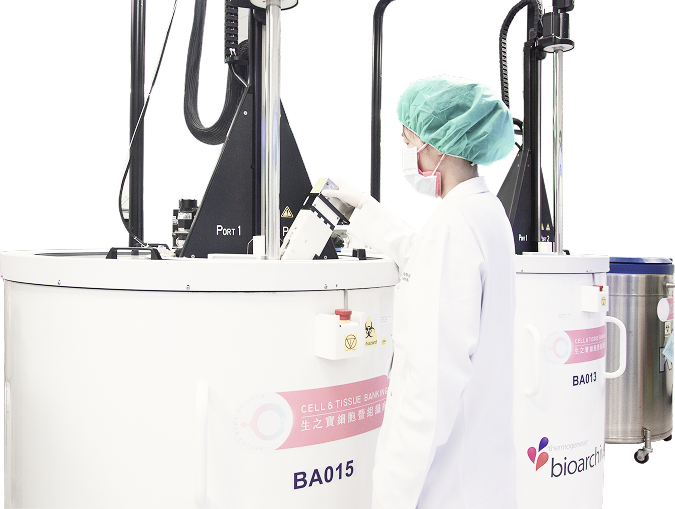

NK細胞又稱自然殺手細胞(Natural Killer Cell)，
是人體免疫系統的前線防護，
能夠即時偵測並清除體內的異常細胞。
而生之寶提供專業的NK細胞分離、檢測與保存服務，
讓您在健康狀態下預留最佳的免疫資源，
成為未來免疫醫療的重要保障。
而NK細胞也是免疫系統中不可或缺的一員，
能在不需額外啟動的情況下，
即時辨識並攻擊異常的細胞。
它就像人體的「巡邏兵」，
持續監控全身狀態，維護免疫平衡。
而國際研究顯示，
NK細胞也與抗老化以及多項醫學研究領域密切相關。

NK免疫細胞 NK CELL
NK CELL
為什麼要儲存NK免疫細胞 WHY
隨著年齡的增長，
身體內的NK細胞數量與功能都會逐漸下降，
這會導致免疫力隨時間減弱。
而提前保存健康時期的NK細胞，
不僅能鎖住NK細胞的最佳狀態，
也為未來的免疫醫療與臨床應用留下一份珍貴資源。
這是一份「對未來健康遠謀」，
正可以成為未來健康的關鍵選擇。
立即儲存
身體內的NK細胞數量與功能都會逐漸下降，
這會導致免疫力隨時間減弱。
而提前保存健康時期的NK細胞，
不僅能鎖住NK細胞的最佳狀態，
也為未來的免疫醫療與臨床應用留下一份珍貴資源。
這是一份「對未來健康遠謀」，
正可以成為未來健康的關鍵選擇。
WHY

專業儲存 EXPERTISE
生之寶所有臍帶血與臍帶組織保存流程，
皆於通過 GTP 與 AABB 國際認證的工廠中進行。
我們嚴格執行品質管理，
並導入專利低溫液態氮槽的冷凍技術，
恆定超低溫環境，
配合特製密封抗凍袋避免交叉感染風險，
保護幹細胞活性，解凍後的細胞活性高達99%以上。
從收集、檢測、處理到保存，
每一步都有專業團隊把關，
讓每一份寶貴的細胞資源都能妥善守護。
立即儲存
皆於通過 GTP 與 AABB 國際認證的工廠中進行。
我們嚴格執行品質管理，
並導入專利低溫液態氮槽的冷凍技術，
恆定超低溫環境，
配合特製密封抗凍袋避免交叉感染風險，
保護幹細胞活性，解凍後的細胞活性高達99%以上。
從收集、檢測、處理到保存，
每一步都有專業團隊把關，
讓每一份寶貴的細胞資源都能妥善守護。
EXPERTISE

NK免疫細胞運用 APPLICATIONS
17種適應症狀
#造血系統疾病
白血病
淋巴瘤
淋巴瘤
#先天性疾病
地中海型貧血
#部分癌症疾病
肺癌
頭頸部鱗狀細胞癌
肝癌
食道癌
胃癌
泌尿上皮癌
腎細胞癌
惡性黑色素瘤
何杰金氏淋巴癌
縱膈腔B細胞淋巴癌
大腸直腸癌
子宮頸癌
子宮內膜癌
三陰性乳癌
頭頸部鱗狀細胞癌
肝癌
食道癌
胃癌
泌尿上皮癌
腎細胞癌
惡性黑色素瘤
何杰金氏淋巴癌
縱膈腔B細胞淋巴癌
大腸直腸癌
子宮頸癌
子宮內膜癌
三陰性乳癌
APPLICATIONS